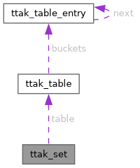

libttak
1.0.0
High-performance Atomic, Threading, and Multi-precision Math Library
Loading...
Searching...
No Matches
ttak_set Struct Reference
#include <
set.h
>
Collaboration diagram for ttak_set:

[
legend
]
Public Attributes
ttak_table_t
table
Detailed Description
Definition at line
7
of file
set.h
.
Member Data Documentation
◆
table
ttak_table_t
ttak_set::table
Definition at line
8
of file
set.h
.
The documentation for this struct was generated from the following file:
include/ttak/container/
set.h
ttak_set
Generated by
1.14.0
 1.14.0
1.14.0